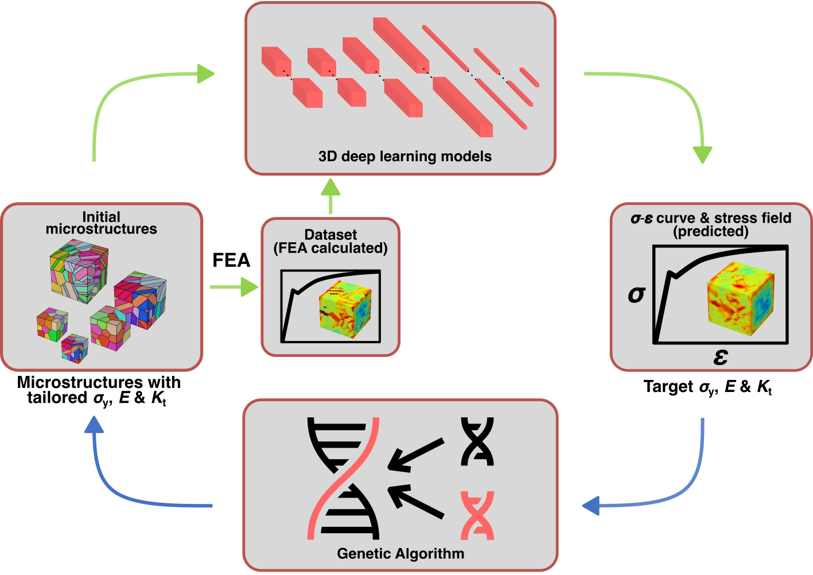
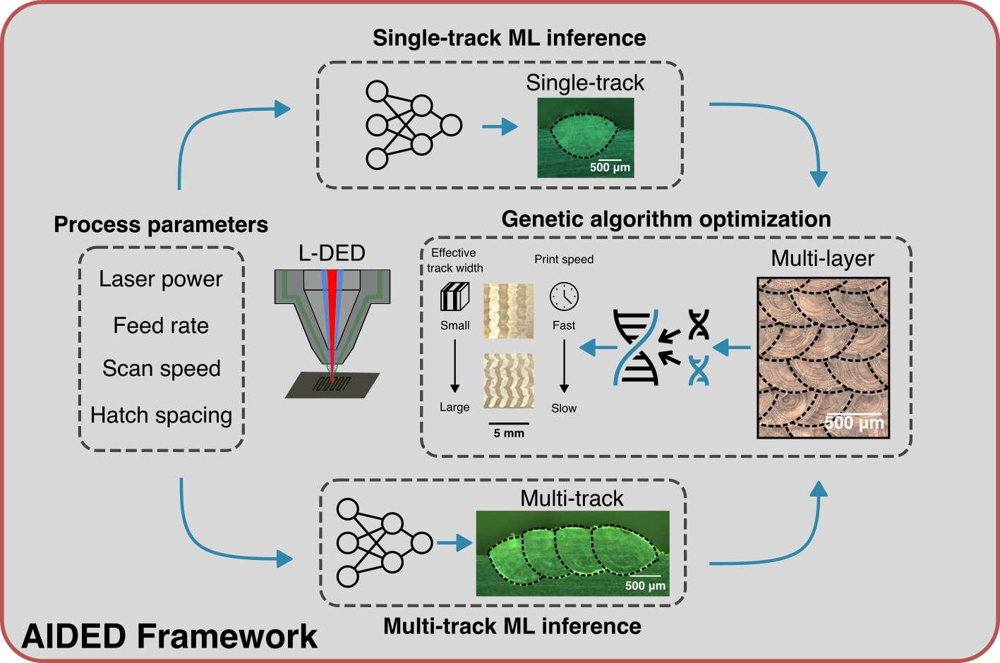
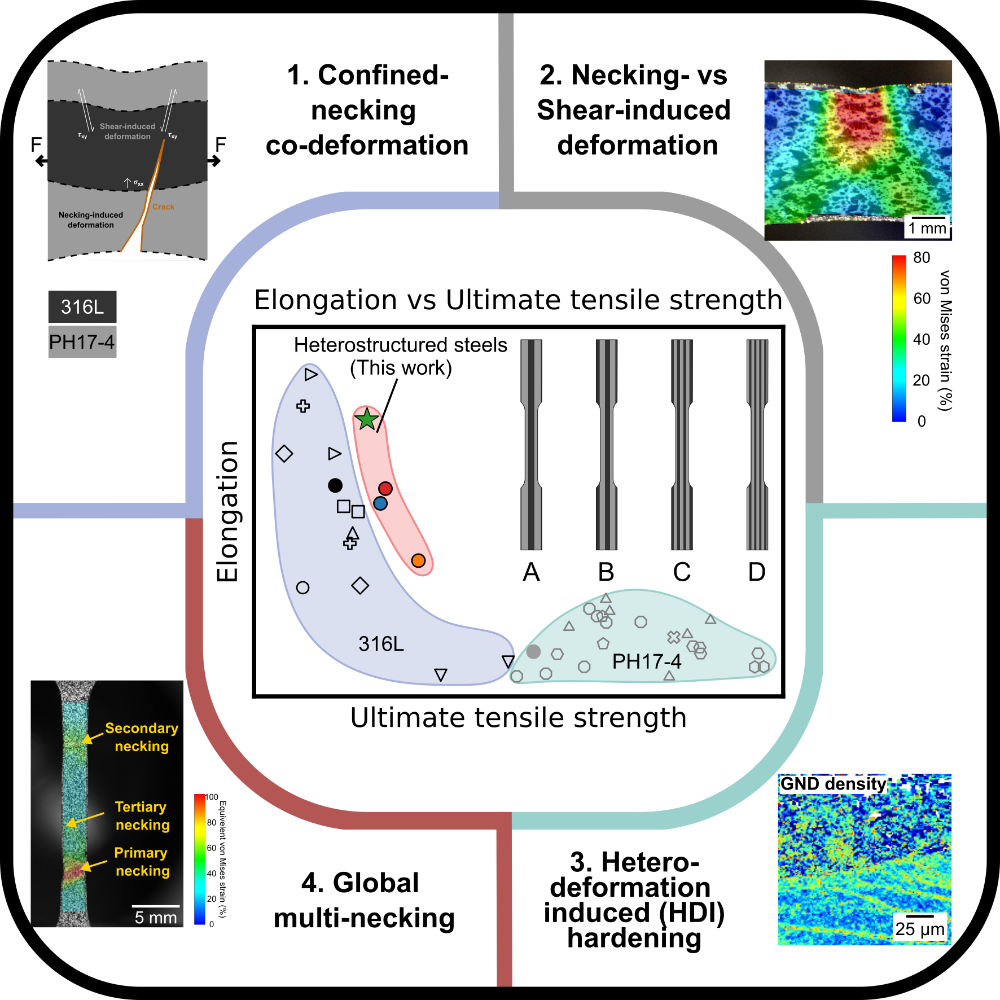
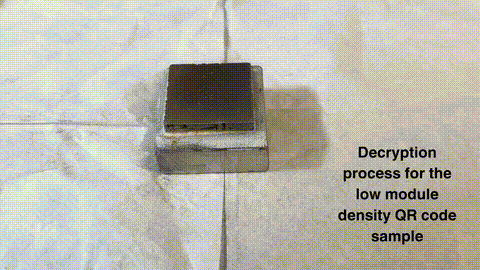

Research Projects

Customized directed energy deposition (DED) system
A directed energy deposition (DED) system designed and built from scratch.

Tailoring the mechanical properties of 3D microstructures
A deep learning and genetic algorithm inverse optimization framework. Check out the paper in the journal Materials Today. Source code can be found here.

Accurate inverse process optimization framework in laser directed energy deposition
A machine-learning framework for process parameter optimization in DED. Check out the paper in the journal of Additive Manufacturing. Source code can be found here.

Confined necking and improved tensile ductility in heterostructured bi-metallic steels made by additive manufacturing
A new deformation mechanism discovered in mesoscale heterostructured steels fabricated by DED. Check out the paper in the journal of Acta Materialia.

Additive Manufacturing of Multimetallic Materials to Achieve Multifunctionality
Here I showcase how DED can be used for unlocking new fucntionalities in metallic materials. The video shows information being durably and securely embedded in metal that can be used for high-value components tracking. Check out the paper in the journal of Metalmat.

Closed-loop controlled intelligent DED
A closed-loop controlled DED that used AI to perform process parameter adjustment autonomously. I won first place with this project in ASM Internation's IMAT Materials Venture Challenge in 2025.

Bi-stable auxetic metamaterial (BAM)
A class of metamaterial that is rigid, auxetic, and bistable.
Projects for fun

A BAM iphone case
- proof of transferring research to real life applications
An expandable iphone case cobining the functionality of a phone case with the artistry of BAM. The design was made to be a one-fit-all for varies sizes of devices.

DIY mini CNC machine
- Hello World!
A mini CNC machine designed and assembled from scratch. Parts are easy to buy on Amazon and with a home 3D printer. The design CAD model is made open source here.